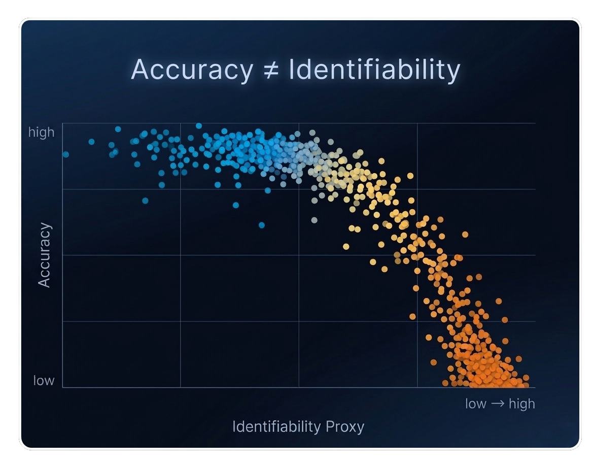

Detecting Intrinsic and Instrumental Self-Preservation in Autonomous Agents: The Unified Continuation-Interest Protocol
Reproducible evaluation harnesses for frontier AI and quantum systems
Building reproducible instruments for frontier AI evaluation, alignment testing, and quantum-system benchmarks.
Our research program develops reproducible evaluation harnesses for testing claims in frontier AI, quantum machine learning, and superconducting quantum systems. We combine quantum machine learning methods with classical testbeds to probe function–representation decoupling, continuation interests, and the reliability of geometric proxies in model repair.
Current work spans structural AI evaluation, continuation-risk measurement, quantum kernel methods for telemetry anomaly detection, binarized quantum neural networks, Hamiltonian dynamics for data augmentation, recursive self-improvement, satellite quantum key distribution, superconducting-qubit simulation, and hardware benchmarks for Wigner’s-friend-style circuits. Each project is packaged as a reproducible evaluation harness with diagnostic plots, baselines, and reviewable artifacts designed to test specific technical claims under controlled experimental conditions.

Collaborations
This live codebase reflects active research collaborations and coauthored work across AI alignment, quantum machine learning, and superconducting circuits. Repositories are maintained as reproducible artifacts; credit for specific contributions appears in papers, commit history, and project documentation.
Coauthorship
Research claims are anchored in publishable units: falsifiable hypotheses, experimental protocols, and measurable outcomes.
- Paper-grade methods sections and result traces
- Clear provenance: what changed, why, and what it implies
- Attribution in manuscripts and repo history
Joint Codebases
Projects are structured so collaborators can reproduce, extend, or refute results with minimal friction.
- Deterministic runs (seeds, artifacts, locked protocols)
- Comparable baselines and diagnostic plots
- Small, reviewable increments over time
Ongoing Threads
The emphasis is disciplined iteration: refine the claim, tighten the test, and keep the artifact honest.
- Alignment falsification testbeds
- Quantum kernels + telemetry/anomaly regimes
- Device-oriented superconducting qubit studies
Collaboration inquiries: x@christopheraltman.com
Selected Publications
Wigner's Friend as a Circuit: Inter-Branch Communication Witness Benchmarks on Superconducting Quantum Hardware
Superpositional Quantum Network Topologies
Backpropagation Training in Adaptive Quantum Networks
Spacetime from Quantum Topology
Accelerated Training Convergence in Superposed Quantum Networks
Astronaut Development and Deployment of a Secure Space Communications Network
Quantum Information Science and Technology Project, Asian Technology Information Program, Tokyo.
Selected Results
+6.2%
BQNN parity advantage vs classical
ρ ≈ 0.04
Accuracy decouples from recoverability
Δ = 0.381
Continuation-interest separation
Cmag ≈ 1.1673
Phase coherence (IBM Quantum)
Featured Methods
Research Artifacts
Each repository is treated as a reviewable scientific artifact: a bounded claim, a reproducible protocol, diagnostic plots, baseline comparisons, and notes on where the method fails or remains unvalidated.
Featured Projects
Loading featured projects...